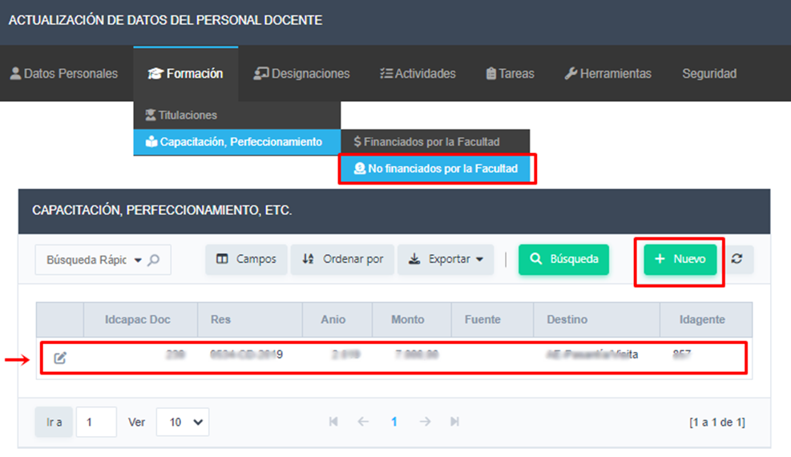
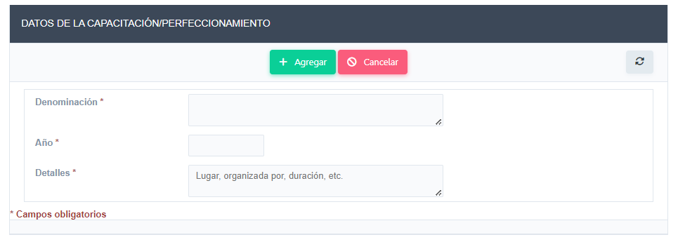

En el ítem de menú Formación > Capacitación, Perfeccionamiento > No Financiados por la Facultad, podrá visualizar, editar, borrar y registrar nuevas actividades de perfeccionamiento realizadas con financiamiento propio o proveniente de entidades externas a la Facultad.
Para agregar un nuevo registro hacer clic en el botón Nuevo y completar los campos necesarios, para finalizar la carga hacer clic en el botón Agregar
